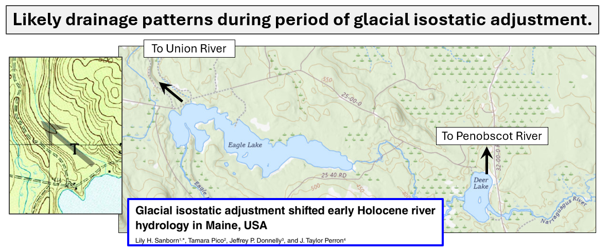

The abandoned, Northwest oriented outlet channel from Eagle Lake is so well developed it leads one to suspect that the Lake's flow direction
was altered during the log drive era. The abandoned channel connects to the Union River via Brandy Pond and Guagus Stream.
SubArea_1_Overview
SubArea_2_Overview
Main Page